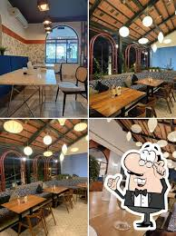
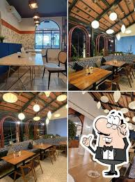

White Garden - Vegetarian Artisan Kitchen,
launched in March 2023, offers a globally-inspired vegetarian menu.
Diners can explore flavorful Indian curries alongside Italian classics and modern takes on Asian cuisine.
desserts complete the delectable experience.